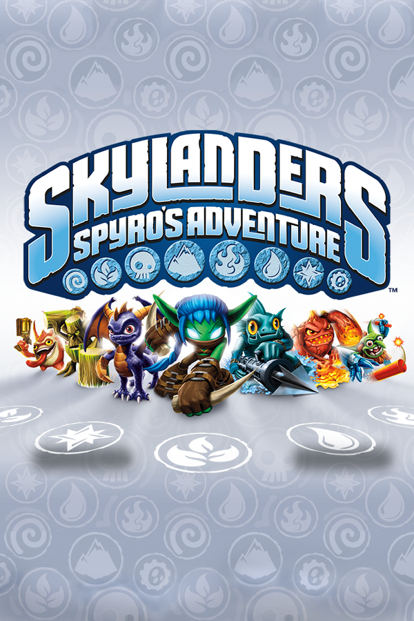

Skylanders: Spyro's Adventure
Skylanders: Spyro's Adventure
Details
|  | |
| Playtime | Not Played |
| Last Activity | Never |
| Added | 4/27/2025 10:06:45 |
| Modified | 4/29/2025 9:13:22 |
| Completion Status | Not Played |
| Library | Playnite |
| Source | |
| Platform | Sony PlayStation 3 |
| Release Date | 10/12/2011 |
| Community Score | 69 |
| Critic Score | 82 |
| User Score | |
| Genre | Brawler |
| Developer | Toys for Bob TransGaming XPEC Entertainment |
| Publisher | Activision |
| Feature | Controller Support Full Controller Support Multiplayer Single Player |
| Links | PCGamingWiki Official site HowLongToBeat IGDB StrategyWiki MobyGames Wikipedia |
| Tag | Direct control Lux Engine Real-Time Third Person |
Description
Skylanders: Spyro's Adventure is a 2011 toys-to-life action role-playing game and the first video game in the Skylanders series. It is played using with toy figures that interact with it through a "Portal of Power" that reads their tag through NFC.
It was released in October 2011 for North America, Europe, and Australia for Nintendo 3DS, PlayStation 3, Wii, Xbox 360 and PC/Windows.
Activision announced that as of June 3, 2012, the game had been the top-selling console and handheld video game worldwide for 2012. As of March 31, 2012, Activision has sold over 30 million Skylanders toys, and sales were expected to exceed $500 million by the end of the year. A direct sequel, Skylanders: Giants, was released in 2012 for the Nintendo 3DS, PlayStation 3, Xbox 360, Wii and Wii U.
Version differences
The game was originally developed by Toys for Bob for the Nintendo Wii, PlayStation 3 and Xbox 360 which feature some notable differences, including:
- Many motion-controlled activities were reassigned to button inputs for specific actions.
- The Wii version allows players to skip most of the game's cutscenes and dialogue, but the HD versions require the player to go through most cutscenes and dialogue.
- On the Wii version, the character portraits used in dialogue have stylistic 2D artwork and use a transparent text box, while the HD versions use 3D character models and a solid black text box.
- The rune icons in the story scroll menu are different.
- The HD versions have different collision mechanics with abilities like Hex's Wall of Bones, which can be used to lift partner Skylanders in co-op mode and bypass obstacles.
- The final level has a different layout halfway through, and the final boss is easier.
The Wii and PlayStation 3 versions of Spyro's Adventure feature a wireless portal that uses AA batteries and includes a USB wireless connector. The Xbox 360 version of Spyro's Adventure features a different wired portal that is incompatible with the other version due to Microsoft's restrictions.
3DS version
The 3DS version of Skylanders: Spyro's Adventure, developed by Vicarious Visions includes a smaller portal with an infrared reader powered by AAA batteries that connects to a 3DS system, and equipped with a USB port that can be used for the console versions of the game. Instead of having to keep the Skylanders on the portal at all times, two Skylanders are "loaded" into the game, and the player can alternate between them until a new Skylander is loaded to replace them. The storyline in this version is different, and the set of non-playable characters is altered, with the exception of Eon. Additionally, the three Skylanders included in the starter pack are 'Ignitor', 'Stealth Elf', and 'Dark Spyro', a cosmetic variant of Spyro.
This version is an action platformer in which players complete levels by collecting crystals to unlock more content. Each level is filled with crystals, which are earned by reaching the end of the level or fulfilling various tasks, such as defeating enemies or finding items. When a player collects a crystal, they trigger an enemy encounter with a time limit, during which they must defeat enemies and find clocks in the level to extend their time and avoid being caught by the chasing enemy. Notably, characters can make single and double jumps. The game is set in the Radiant Isles, a distinct realm in Skylands, where players face a different force of darkness led by Hektore. This version lacks co-op functionality.
Synopsis
Players take on the role of a Portal Master who controls 32 different Skylanders, including Spyro, by placing their figurines on the Portal of Power. These heroes are the protectors of the realm of Skylands, but after the Dark Portal Master Kaos ejected them from their world to Earth, they were frozen and transformed into toys. Due to the lack of magic in the human world, they are petrified and only the players can return them to their world. Once back in their home world, the Skylanders embark on a journey to defeat Kaos and save their world.
Characters
There are 32 standard characters and 8 different elements under which they are classified. The 8 elements are Magic, Water, Tech, Fire, Earth, Life, Air, and Undead, with four Skylanders for each element. Characters appear in the game by placing a character's figurine on the "Portal of Power". The "Starter Pack" has three characters to start with – Spyro, Trigger Happy, and Gill Grunt. Each character has different stats in areas such as health and speed, which can be affected by hats found throughout the game world. Special Elemental Gates require a Skylander with the corresponding element to pass through. With two players, only one player needs to be controlling a Skylander of the correct element.
In addition to the standard character figures, there are also limited edition Gold, Silver, Crystal, Chrome, and Glow-in-the-Dark versions of certain characters these are referred to as "chase variants".
The game begins with a village in Skylands being ravaged by a massive tornado and the player sending down a Skylander to save the villagers as Hugo mentions the destruction of the Core of Light and an individual named Master Eon.
The player is then introduced to the Ruins, and it is explained that the Portal Masters and the Skylanders have worked to protect Skylands from The Darkness, with Master Eon and his Skylanders guarding the Core of Light, which repelled The Darkness. However, Kaos, a Dark Portal Master who previously attempted to destroy the Core of Light, returned from his banishment in the Outlands to destroy the Core and rule over Skylands. The Skylanders fought to protect the Core of Light, but Kaos unleashed a mysterious creature that destroyed the Core. In the aftermath, Eon became a spirit and the Skylanders, including Spyro, were banished from their world to Earth, where they were turned into a toy-like state as a result of it lacking magic. Though Master Eon survived the Core's destruction, he was unable to fight Kaos and the Darkness as a spirit. He and the Skylanders then awaited the arrival of a new Portal Master until the player arrived.
To restore the Core of Light, the player must bring back the Eternal Source of each of the eight elements, which power the Core, as well as their corresponding artifacts, which make up the Core's form and inner workings. Despite Kaos' best efforts to stop the Skylanders, the Core of Light is restored. Humiliated and weakened, Kaos and his assistant Glumshanks retreat to the Outlands, Skylands' most desolate area. The player and the Skylanders journey to Kaos' Fortress for the final battle against him, his dark Skylanders and the Hydra, who was responsible for the Core of Light's destruction.
Kaos is ultimately defeated, and Eon informs him that he is being banished not to the Outlands, but to Earth. Hugo sends Kaos to Earth, where he becomes a petrified figure like the Skylanders were.
Development
Toys for Bob was given the opportunity to revive a Vivendi franchise, and they chose the Spyro the Dragon franchise. Paul Reiche III noted that "attempts to revive broad-audience mascot franchises haven't seen predictable success in the game industry. Just creating a new Spyro game after the traditional fashion was unlikely to work" and reinventing the character as a "really gritty, strange otherworldly Spyro" didn't seem like a promising idea. Reiche says he had considered integrating technology with toys and games for a while, and it was the kind of concept that was so outlandish that it was the most promising idea the team sketched out for the brand.
The game's original working title was Spyro's Kingdom, which was a mature Spyro game with a much darker tone. However, the developers of Toys for Bob felt that this direction did not feel like "Spyro". They spent six months working on various directions the game could take with the time and budget Activision gave them.
Executive producer Jeff Poffenbarger stated that the game is geared more towards younger gamers who have no prior knowledge of Spyro.
The base of each toy contains an RFID chip which communicates wirelessly with the portal when in near proximity to inform the game which toy is currently active. The RFID chip also retains several key stats including gold, level and upgrades purchased and won through gameplay and "Heroic Challenges" completed. Due to the use of RFID, the toys are portable between supported platforms while retaining their stats, allowing players to use their characters in other player's copy of the game with all upgrades. Additionally, two figures can be placed on the portal simultaneously, for cooperative or versus play.
The game's original score was written primarily by Lorne Balfe, with some additional compositions by Andrew Kawczynski and Pete Adams. The main theme was written by Hans Zimmer.
The game's main story was penned by Alec Sokolow and Joel Cohen, both of whom worked on Toy Story. The game was originally revealed to be exclusive for the Wii, and was intended to be released in 2010. While the game was delayed, this allowed the developers to add features such as saving data to the toys, more polished content and story, and ports to additional platforms. As a result, the Xbox 360, PlayStation 3, MacOS, and Windows ports run on different engines than the Wii version.
According to Sterne Agee analyst Arvind Bathia, Skylanders: Spyro's Adventure "is testing apparently very well with kids", who are the game's target audience.
Nickelodeon of Europe and Activision worked together to help sponsor a tour called Skylanders: Spyro's Adventure Live to help promote the game, ranging from September 10–11 at Liverpool, Williamson Square to September 17–18 at London, Westfield Stratford.
In Japan, the game's release was handled by Toys "R" Us and Square Enix and was released for the Wii, PlayStation 3, Nintendo 3DS. Rather than an Xbox 360 release, Japan received a unique Wii U port which was released on July 12, 2013, nearly two years after its release in the western regions. This made Skylanders the first Spyro game to be released in Japan in almost 10 years since Spyro Orange: The Cortex Conspiracy.
Reception
Skylanders: Spyro's Adventure received "generally favorable" reviews according to review aggregator Metacritic.
GameSpot gave it a 7.5 out of 10, praising its family-friendly gameplay and role-playing-style character progression, but criticized the lack of online multiplayer, the cost of buying a complete set of figures, the arbitrary inclusion of Spyro, and the unreliability of the Portal of Power peripheral. Nintendo World Report gave the game a 9 out of 10, praising the Wii version for its gameplay and production values, and the Nintendo 3DS version for its accessibility to younger gamers and overall design.
Destructoid gave the game an 8 out of 10 saying, "It's not the most complex game on the market, but the innovative gadgetry and authentic thoughtfulness on the part of the developer stands out in a market so used to churning out the same old crap." IGN gave Skylanders an 8 out of 10. Skylanders was nominated for two Toy Industry Association awards: 'Game of the Year' and 'Innovative Toy of the Year'.
Giant Bomb reviewer Jeff Gerstmann gave the game four out of five stars, stating "Skylanders is probably aimed at kids, but whatever. I am a legal adult...and I think it's still pretty cool."
During the 15th Annual Interactive Achievement Awards, the Academy of Interactive Arts & Sciences awarded Skylanders with "Outstanding Innovation in Gaming", along with nominations for "Family Game of the Year" and "Outstanding Achievement in Gameplay Engineering".
Sales
During the first quarter of 2012, Skylanders was the third most profitable game in North America and Europe, including sales of accessories and figures. According to Activision's internal estimates, sales of Skylanders toys exceeded those of the number one action figure line at the time, Star Wars.
Over 30,000,000 Skylanders toys have been sold worldwide. Toy sales from the first game were twice to 3 times higher than Activision had originally expected, prompting the making of a sequel.
As of December 2012, the Skylanders franchise sold more than $500 million in retail sales in the U.S., inclusive of accessory packs and figures. In 2012 alone, Skylanders: Giants, the sequel to Skylanders: Spyro's Adventure—the #1 best-selling kids' game of 2011—generated more than $195,000,000 in U.S. sales.
Sequels and other media
Activision announced a sequel, Skylanders: Giants, which was released in October 2012. A web game called Skylanders: Universe was created as well but was discontinued on 29 April 2013. A second sequel, Skylanders: Swap Force, was released in October 2013. A third sequel, Skylanders: Trap Team, was released in October 2014. A fourth sequel, Skylanders: SuperChargers was released in September 2015. A fifth sequel, Skylanders: Imaginators was released in October 2016.
On May 3, 2012, Skylanders: The Machine of Doom, a novel serving as a prequel to the first Skylanders game, was released on eBook applications. It was written by Cavan Scott under the pen name "Onk Beakman". Later novel adaptions under the Skylanders: Mask of Power series were written following a year after the first book's release; they are set after the events of The Machine of Doom and are also prequels to the first Skylanders game. The eighth and final book in the Mask of Power series was released on May 3, 2016.
A comic series created by IDW Publishing is associated with the Skylanders franchise, and takes place in between the games starting with Skylanders: Trap Team.
Activison had commented on the possibility of a Skylanders movie and TV series as something that they could look into in the future. While Activision confirmed on May 30, 2013, that there were no plans for a Skylanders movie adaption or a TV series, on November 6, 2015, they announced the opening of Activision Blizzard Studios, who are in the process of developing Skylanders into a film and television series; the latter being called Skylanders Academy, which was released on Netflix on October 28, 2016.